[1]:
%matplotlib inline
%load_ext autoreload
%autoreload 2
[2]:
import matplotlib.pyplot as plt
import numpy as np
from helpr.api import CrackEvolutionAnalysis
from helpr.utilities.unit_conversion import convert_psi_to_mpa, convert_in_to_m
from probabilistic.capabilities.uncertainty_definitions import (DeterministicCharacterization,
NormalDistribution,
BetaDistribution,
UniformDistribution,
TruncatedNormalDistribution)
from probabilistic.capabilities.plotting import plot_sample_histogram
Life Assessment of Pipe with Residual Stress
Problem Specification
[3]:
# 36 inch outer diameter
pipe_outer_diameter = DeterministicCharacterization(name='outer_diameter',
value=convert_in_to_m(36))
# 0.406 inch wall thickness
wall_thickness = DeterministicCharacterization(name='wall_thickness',
value=convert_in_to_m(0.406))
# material yield strength of 52_000 psi
yield_strength = DeterministicCharacterization(name='yield_strength',
value=convert_psi_to_mpa(52_000))
# fracture resistance (toughness), MPa m1/2
fracture_resistance = DeterministicCharacterization(name='fracture_resistance',
value=55)
# maximum pressure during oscillation, MPa
max_pressure = DeterministicCharacterization(name='max_pressure',
value= convert_psi_to_mpa(840))
# minimum pressure during oscillation (or R = 0.75)
min_pressure = DeterministicCharacterization(name='min_pressure',
value=convert_psi_to_mpa(638))
# temperature of gas in pipe, K
temperature = DeterministicCharacterization(name='temperature',
value=293)
# % mole fraction H2 in natural gas blend
volume_fraction_h2 = DeterministicCharacterization(name='volume_fraction_h2',
value=1)
# flaw 25% through pipe thickness
flaw_depth = DeterministicCharacterization(name='flaw_depth',
value= 25)
# width of initial crack/flaw, m
flaw_length = DeterministicCharacterization(name='flaw_length',
value= convert_in_to_m(1.575))
stress_intensity_method = 'api' # Stress intensity factor method used
surface = 'inside' # surface on which crack is
Residual Stress Specifications
Residual stress can be defined in two ways:
Providing a static, explicit stress intensity factor (
residual_stress_intensity_factor)Providing properties of a weld, which allows an evolving stress intensity factor as the flaw changes. The weld properties are:
Weld thickness
Distance between the flaw and the weld
Relative direction (i.e. perpendicular or parallel to the weld seam) between the flaw and the weld
Weld steel
Weld process
Weld material yield strength (optional; estimated based on pipe material if not provided)
[4]:
flaw_direction = 'perpendicular'
weld_process = 'SMAW'
weld_steel = 'ferritic'
weld_thickness_det = DeterministicCharacterization(name='weld_thickness', value=0.01)
weld_yield_strength_det = DeterministicCharacterization(name='weld_yield_strength', value=convert_psi_to_mpa(52_000))
weld_flaw_distance_det = DeterministicCharacterization(name='weld_flaw_distance', value=0.02*3)
k_res_explicit_det = DeterministicCharacterization(name='residual_stress_intensity_factor', value=12.)
Deterministic Analysis
[5]:
analysis_wo_kres_det = CrackEvolutionAnalysis(outer_diameter=pipe_outer_diameter,
wall_thickness=wall_thickness,
flaw_depth=flaw_depth,
max_pressure=max_pressure,
min_pressure=min_pressure,
temperature=temperature,
volume_fraction_h2=volume_fraction_h2,
yield_strength=yield_strength,
fracture_resistance=fracture_resistance,
flaw_length=flaw_length,
stress_intensity_method=stress_intensity_method,
surface=surface,
fad_type='API 579-1 Level 2')
analysis_wo_kres_det.perform_study()
analysis_w_exp_kres_det = CrackEvolutionAnalysis(outer_diameter=pipe_outer_diameter,
wall_thickness=wall_thickness,
flaw_depth=flaw_depth,
max_pressure=max_pressure,
min_pressure=min_pressure,
temperature=temperature,
volume_fraction_h2=volume_fraction_h2,
yield_strength=yield_strength,
fracture_resistance=fracture_resistance,
flaw_length=flaw_length,
stress_intensity_method=stress_intensity_method,
surface=surface,
residual_stress_intensity_factor=k_res_explicit_det,
fad_type='API 579-1 Level 2')
analysis_w_exp_kres_det.perform_study()
analysis_w_weld_det = CrackEvolutionAnalysis(outer_diameter=pipe_outer_diameter,
wall_thickness=wall_thickness,
flaw_depth=flaw_depth,
max_pressure=max_pressure,
min_pressure=min_pressure,
temperature=temperature,
volume_fraction_h2=volume_fraction_h2,
yield_strength=yield_strength,
fracture_resistance=fracture_resistance,
flaw_length=flaw_length,
stress_intensity_method=stress_intensity_method,
surface=surface,
weld_thickness=weld_thickness_det,
weld_yield_strength=weld_yield_strength_det,
weld_flaw_distance=weld_flaw_distance_det,
weld_flaw_direction=flaw_direction,
weld_steel=weld_steel,
weld_process=weld_process,
fad_type='API 579-1 Level 2')
analysis_w_weld_det.perform_study()
[6]:
fig, ax1 = plt.subplots(figsize=(4,4))
ax1.plot(analysis_wo_kres_det.nominal_load_cycling[0]['Total cycles'],
analysis_wo_kres_det.nominal_load_cycling[0]['a/t'],
'k-', label=r'w/o $K_{res}$')
ax1.plot(analysis_wo_kres_det.nominal_life_criteria['Cycles to a(crit)'][0],
analysis_wo_kres_det.nominal_life_criteria['Cycles to a(crit)'][1],
'k*')
ax1.plot(analysis_w_exp_kres_det.nominal_load_cycling[0]['Total cycles'],
analysis_w_exp_kres_det.nominal_load_cycling[0]['a/t'],
'r--', label=r'w/ explicit $K_{res}$')
ax1.plot(analysis_w_exp_kres_det.nominal_life_criteria['Cycles to a(crit)'][0],
analysis_w_exp_kres_det.nominal_life_criteria['Cycles to a(crit)'][1],
'r*')
ax1.plot(analysis_w_weld_det.nominal_load_cycling[0]['Total cycles'],
analysis_w_weld_det.nominal_load_cycling[0]['a/t'],
'b--', label=r'w/ evolving $K_{res}$ from weld')
ax1.plot(analysis_w_weld_det.nominal_life_criteria['Cycles to a(crit)'][0],
analysis_w_weld_det.nominal_life_criteria['Cycles to a(crit)'][1],
'b.')
ax1.set_xlabel('Total cycles')
ax1.set_ylabel('a/t')
ax1.set_xscale('log')
ax1.legend(loc=0)
plt.grid(color='gray', alpha=0.3, linestyle='--')
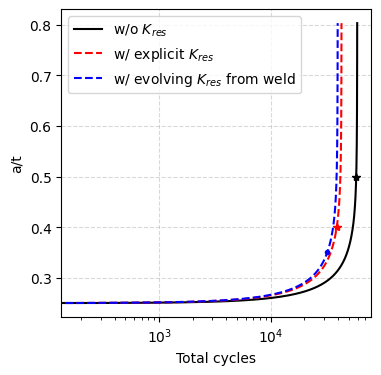
[7]:
analysis_wo_kres_det.postprocess_single_crack_results()
analysis_wo_kres_det.get_design_curve_plot()
plt.title(r'Without $K_{res}$')
_, _ = analysis_wo_kres_det.assemble_failure_assessment_diagram()
analysis_w_exp_kres_det.postprocess_single_crack_results()
analysis_w_exp_kres_det.get_design_curve_plot()
plt.title(r'With explicit $K_{res}$')
_, _ = analysis_w_exp_kres_det.assemble_failure_assessment_diagram()
analysis_w_weld_det.postprocess_single_crack_results()
analysis_w_weld_det.get_design_curve_plot()
plt.title(r'With evolving $K_{res}$ from weld')
_, _ = analysis_w_weld_det.assemble_failure_assessment_diagram()
Cycles to a(crit) Cycles to 25% a(crit) Cycles to 1/2 Nc \
Total cycles 58168.074078 1.000000 29084.037039
a/t 0.499076 0.124769 0.288095
Cycles to FAD line
Total cycles 56495.856587
a/t 0.437057
Cycles to a(crit) Cycles to 25% a(crit) Cycles to 1/2 Nc \
Total cycles 38931.506596 1.000000 19465.753298
a/t 0.400062 0.100015 0.285647
Cycles to FAD line
Total cycles 23220.301262
a/t 0.296395
Cycles to a(crit) Cycles to 25% a(crit) Cycles to 1/2 Nc \
Total cycles 32129.347790 1.000000 16064.673895
a/t 0.350875 0.087719 0.279793
Cycles to FAD line
Total cycles 7751.442225
a/t 0.262253
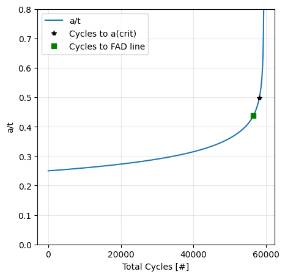
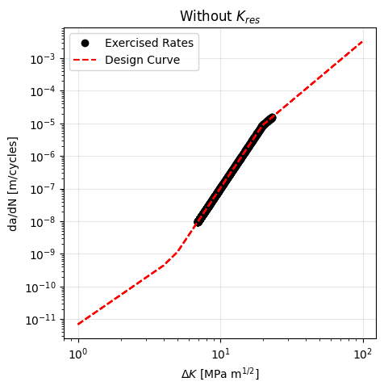
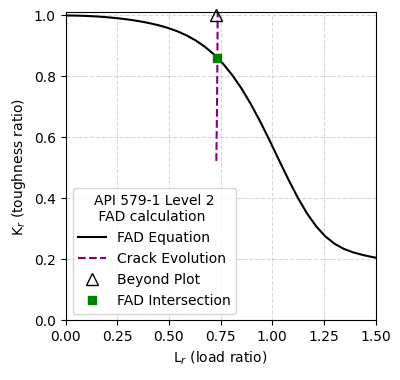
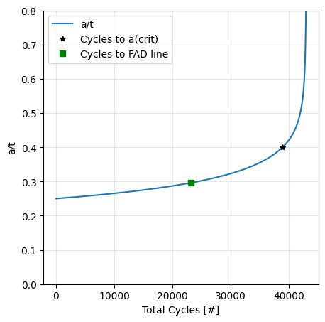
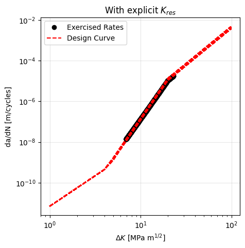
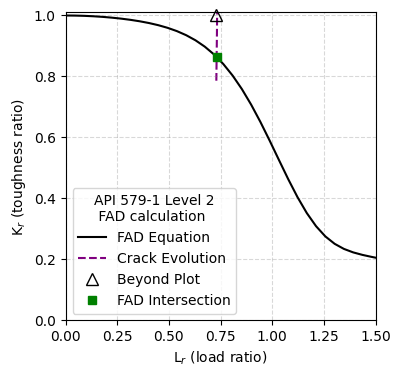
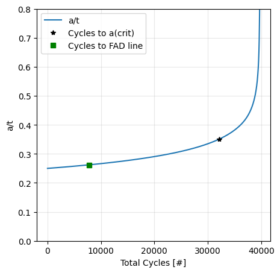
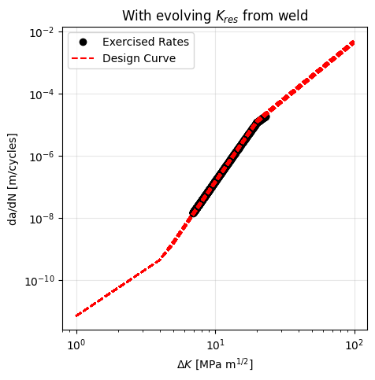
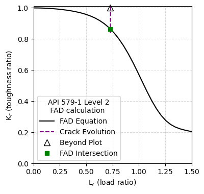
[8]:
fig = plt.figure(figsize=(4, 4))
plt.plot(analysis_wo_kres_det.nominal_load_cycling[0]['Total cycles'],
analysis_wo_kres_det.nominal_load_cycling[0]['R ratio'],
'g-', label=r'w/o $K_{res}$')
plt.plot(analysis_w_exp_kres_det.nominal_load_cycling[0]['Total cycles'],
analysis_w_exp_kres_det.nominal_load_cycling[0]['R ratio'],
'g-.', label=r'w/ explicit $K_{res}$')
plt.plot(analysis_w_weld_det.nominal_load_cycling[0]['Total cycles'],
analysis_w_weld_det.nominal_load_cycling[0]['R ratio'],
'g--', label=r'w/ evolving $K_{res}$ from weld')
plt.xlabel('Total cylcles [#]')
plt.ylabel('R Ratio', color='green')
plt.xscale('log')
plt.grid(color='gray', alpha=0.3, linestyle='--')
plt.legend(loc=0)
fig = plt.figure(figsize=(4,4))
plt.plot(analysis_wo_kres_det.nominal_load_cycling[0]['Total cycles'],
analysis_wo_kres_det.nominal_load_cycling[0]['Kres (MPa m^1/2)'],
'b-', label=r'w/o $K_{res}$')
plt.plot(analysis_w_exp_kres_det.nominal_load_cycling[0]['Total cycles'],
analysis_w_exp_kres_det.nominal_load_cycling[0]['Kres (MPa m^1/2)'],
'b-.', label=r'w/ explicit $K_{res}$')
plt.plot(analysis_w_weld_det.nominal_load_cycling[0]['Total cycles'],
analysis_w_weld_det.nominal_load_cycling[0]['Kres (MPa m^1/2)'],
'b--', label=r'w/ evolving $K_{res}$ from weld')
plt.xlabel('Total cylcles [#]')
plt.ylabel('Kres [MPa m$^{1/2}$]', color='blue')
plt.xscale('log')
plt.grid(color='gray', alpha=0.3, linestyle='--')
plt.legend(loc=0)
fig = plt.figure(figsize=(4,4))
plt.plot(analysis_wo_kres_det.nominal_load_cycling[0]['Total cycles'],
analysis_wo_kres_det.nominal_load_cycling[0]['Kmax (MPa m^1/2)'],
'b-', label=r'w/o $K_{res}$')
plt.plot(analysis_w_exp_kres_det.nominal_load_cycling[0]['Total cycles'],
analysis_w_exp_kres_det.nominal_load_cycling[0]['Kmax (MPa m^1/2)'],
'b-.', label=r'w/ explicit $K_{res}$')
plt.plot(analysis_w_weld_det.nominal_load_cycling[0]['Total cycles'],
analysis_w_weld_det.nominal_load_cycling[0]['Kmax (MPa m^1/2)'],
'b--', label=r'w/ evolving $K_{res}$ from weld')
plt.xlabel('Total cylcles [#]')
plt.ylabel(r'K$_{max}$ + K$_{res}$ [MPa m$^{1/2}$]', color='blue')
plt.xscale('log')
plt.grid(color='gray', alpha=0.3, linestyle='--')
plt.legend(loc=0)
fig = plt.figure(figsize=(4,4))
plt.plot(analysis_wo_kres_det.nominal_load_cycling[0]['Total cycles'],
analysis_wo_kres_det.nominal_load_cycling[0]['Delta K (MPa m^1/2)'],
'b-', label=r'w/o $K_{res}$')
plt.plot(analysis_w_exp_kres_det.nominal_load_cycling[0]['Total cycles'],
analysis_w_exp_kres_det.nominal_load_cycling[0]['Delta K (MPa m^1/2)'],
'b-.', label=r'w/ explicit $K_{res}$')
plt.plot(analysis_w_weld_det.nominal_load_cycling[0]['Total cycles'],
analysis_w_weld_det.nominal_load_cycling[0]['Delta K (MPa m^1/2)'],
'b--', label=r'w/ evolving $K_{res}$ from weld')
plt.xlabel('Total cylcles [#]')
plt.ylabel(r'$\Delta$ K [MPa m$^{1/2}$]', color='blue')
plt.xscale('log')
plt.grid(color='gray', alpha=0.3, linestyle='--')
plt.legend(loc=0);
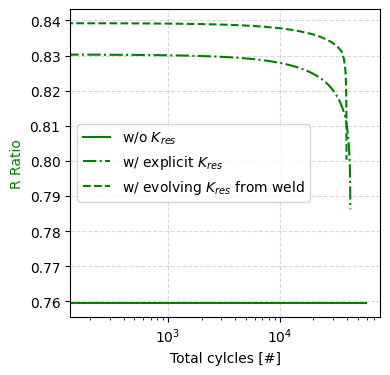
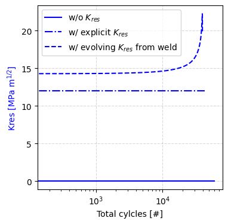
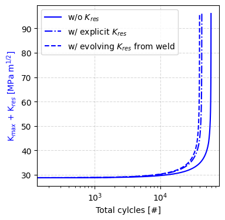
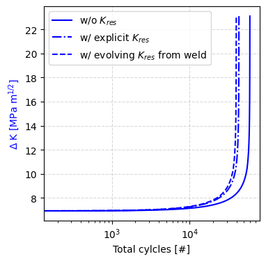
[9]:
fig = plt.figure(figsize=(4,4))
plt.plot(analysis_wo_kres_det.nominal_load_cycling[0]['Kmax (MPa m^1/2)'],
np.array(analysis_wo_kres_det.nominal_load_cycling[0]['Delta a (m)'])/\
np.array(analysis_wo_kres_det.nominal_load_cycling[0]['Delta N']),
'b-', label=r'w/o $K_{res}$')
plt.plot(analysis_w_exp_kres_det.nominal_load_cycling[0]['Kmax (MPa m^1/2)'],
np.array(analysis_w_exp_kres_det.nominal_load_cycling[0]['Delta a (m)'])/\
np.array(analysis_w_exp_kres_det.nominal_load_cycling[0]['Delta N']),
'b-.', label=r'w/ explicit $K_{res}$')
plt.plot(analysis_w_weld_det.nominal_load_cycling[0]['Kmax (MPa m^1/2)'],
np.array(analysis_w_weld_det.nominal_load_cycling[0]['Delta a (m)'])/\
np.array(analysis_w_weld_det.nominal_load_cycling[0]['Delta N']),
'b--', label=r'w/ evolving $K_{res}$ from weld')
plt.xlabel(r'Kmax [MPa m$^{1/2}$]')
plt.ylabel('da/dN (m/cycle)', color='blue')
plt.xscale('log')
plt.grid(color='gray', alpha=0.3, linestyle='--')
plt.legend(loc=0);
/var/folders/m7/xj3t74md7k32bgn0f0bvz3mr002lyh/T/ipykernel_25346/1506651364.py:3: RuntimeWarning: invalid value encountered in divide
np.array(analysis_wo_kres_det.nominal_load_cycling[0]['Delta a (m)'])/\
/var/folders/m7/xj3t74md7k32bgn0f0bvz3mr002lyh/T/ipykernel_25346/1506651364.py:7: RuntimeWarning: invalid value encountered in divide
np.array(analysis_w_exp_kres_det.nominal_load_cycling[0]['Delta a (m)'])/\
/var/folders/m7/xj3t74md7k32bgn0f0bvz3mr002lyh/T/ipykernel_25346/1506651364.py:11: RuntimeWarning: invalid value encountered in divide
np.array(analysis_w_weld_det.nominal_load_cycling[0]['Delta a (m)'])/\
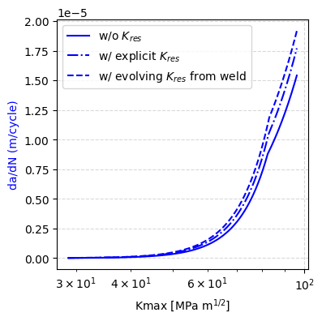
Probabilistic Analysis
[10]:
sample_type = 'lhs'
sample_size = 100
plotted_variable = 'Cycles to a(crit)'
[11]:
weld_thickness_prob = TruncatedNormalDistribution(
name='weld_thickness',
uncertainty_type='aleatory',
nominal_value=0.01,
mean=0.01,
std_deviation=0.005,
lower_bound=0.001,
upper_bound=0.02)
weld_yield_strength_prob = BetaDistribution(
name='weld_yield_strength',
uncertainty_type='aleatory',
nominal_value=convert_psi_to_mpa(52_000),
a=0.5,
b=2,
loc=convert_psi_to_mpa(52_000),
scale=1)
weld_flaw_distance_prob = UniformDistribution(
name='weld_flaw_distance',
uncertainty_type='aleatory',
nominal_value=0.02*3,
lower_bound=0.02*.5,
upper_bound=0.02*4.5)
k_res_explicit_prob = NormalDistribution(
name='residual_stress_intensity_factor',
uncertainty_type='aleatory',
nominal_value=12.,
mean=12.,
std_deviation=2)
[12]:
analysis_w_exp_kres_prob = CrackEvolutionAnalysis(outer_diameter=pipe_outer_diameter,
wall_thickness=wall_thickness,
flaw_depth=flaw_depth,
max_pressure=max_pressure,
min_pressure=min_pressure,
temperature=temperature,
volume_fraction_h2=volume_fraction_h2,
yield_strength=yield_strength,
fracture_resistance=fracture_resistance,
flaw_length=flaw_length,
stress_intensity_method=stress_intensity_method,
surface=surface,
residual_stress_intensity_factor=k_res_explicit_prob,
aleatory_samples=sample_size,
sample_type=sample_type,
fad_type='API 579-1 Level 2')
analysis_w_exp_kres_prob.perform_study()
analysis_w_weld_prob = CrackEvolutionAnalysis(outer_diameter=pipe_outer_diameter,
wall_thickness=wall_thickness,
flaw_depth=flaw_depth,
max_pressure=max_pressure,
min_pressure=min_pressure,
temperature=temperature,
volume_fraction_h2=volume_fraction_h2,
yield_strength=yield_strength,
fracture_resistance=fracture_resistance,
flaw_length=flaw_length,
stress_intensity_method=stress_intensity_method,
surface=surface,
weld_thickness=weld_thickness_prob,
weld_yield_strength=weld_yield_strength_prob,
weld_flaw_distance=weld_flaw_distance_prob,
weld_flaw_direction=flaw_direction,
weld_steel=weld_steel,
weld_process=weld_process,
aleatory_samples=sample_size,
sample_type=sample_type,
fad_type='API 579-1 Level 2')
analysis_w_weld_prob.perform_study()
[13]:
for parameter in analysis_w_exp_kres_prob.uncertain_parameters:
analysis_w_exp_kres_prob.input_parameters[parameter].plot_distribution()
plot_sample_histogram(analysis_w_exp_kres_prob.sampling_input_parameter_values[parameter],
f'{parameter} - Sample Density',
density=True,
histtype='step')
analysis_w_exp_kres_prob.generate_probabilistic_results_plots(plotted_variable=[plotted_variable])
_, _ = analysis_w_exp_kres_prob.assemble_failure_assessment_diagram()
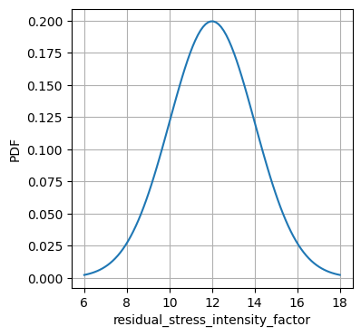
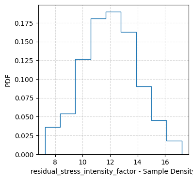
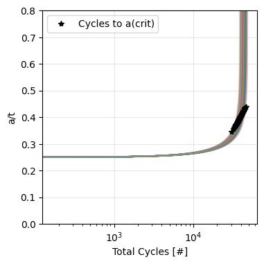
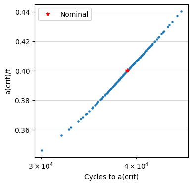
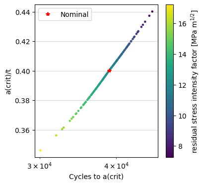
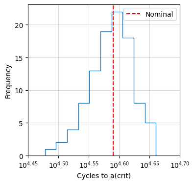
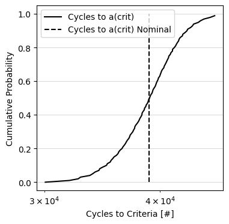
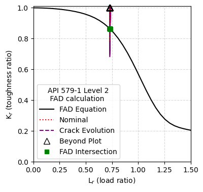
[14]:
for parameter in analysis_w_weld_prob.uncertain_parameters:
analysis_w_weld_prob.input_parameters[parameter].plot_distribution()
plot_sample_histogram(analysis_w_weld_prob.sampling_input_parameter_values[parameter],
f'{parameter} - Sample Density',
density=True,
histtype='step')
analysis_w_weld_prob.generate_probabilistic_results_plots(plotted_variable=[plotted_variable])
_, _ = analysis_w_weld_prob.assemble_failure_assessment_diagram()
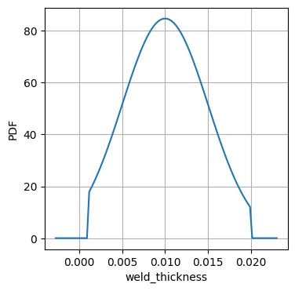
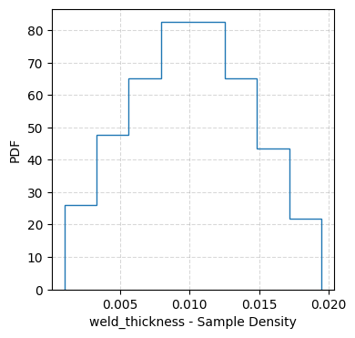
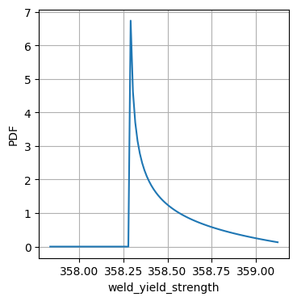
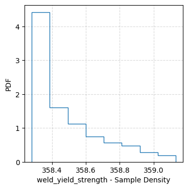
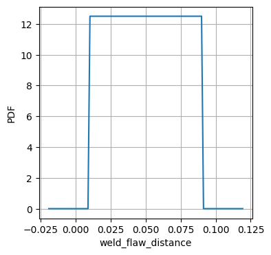
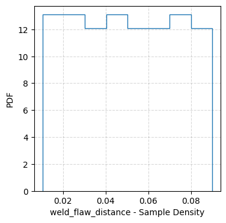
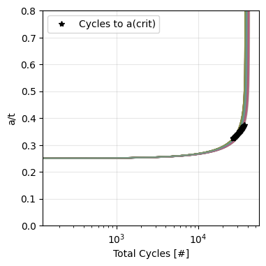
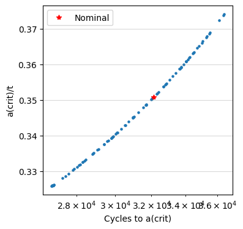
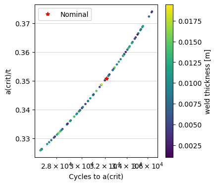
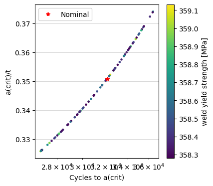
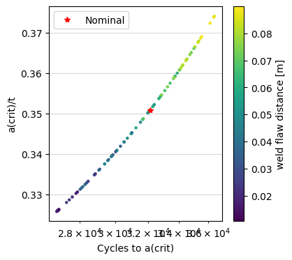
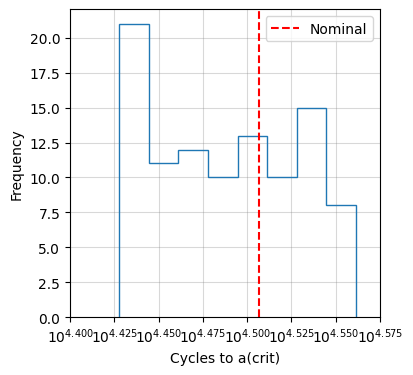
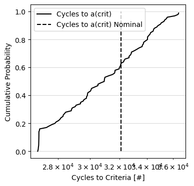
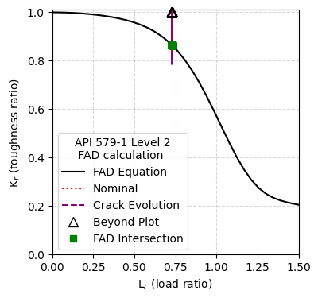
[15]:
import pandas as pd
import numpy as np
import matplotlib.pyplot as plt
from helpr.physics.environment import EnvironmentSpecification
from helpr.physics.crack_growth import CrackGrowth
def get_da_dn(r_p,
k_res,
k_max,
delta_a=1e-6):
crack_growth_model={'model_name': 'code_case_2938'}
environment = EnvironmentSpecification(max_pressure=10,
min_pressure=1,
temperature=293,
volume_fraction_h2=1)
crack_growth = CrackGrowth(environment=environment,
growth_model_specification=crack_growth_model)
k_min = k_max * r_p
r_k = (k_min + k_res)/(k_max + k_res)
delta_k = (k_max + k_res)*(1 - r_k)
# G = 5.5 # MPa m^1/2
# I = 5.5 # MPa m^1/2
# H = 0.8
# delta_k_th = min(G*(1 - H*r_k), I)
da_dn = delta_a/crack_growth.calc_delta_n(delta_a=delta_a, delta_k=delta_k, r_ratio=r_k)
return da_dn
all_results_40 = {0:[], 10: [], 20: []}
all_results_50 = {0:[], 10: [], 20: []}
r_p = np.linspace(0.5, .96, 200)
k_res = [0, 10, 20, 30]
for kres in k_res:
temp_40 = []
temp_50 = []
for rp in r_p:
da_dn = get_da_dn(r_p=rp, k_res=kres, k_max=40)
temp_40.append(da_dn)
da_dn = get_da_dn(r_p=rp, k_res=kres, k_max=50)
temp_50.append(da_dn)
all_results_40[kres] = temp_40
all_results_50[kres] = temp_50
df_40 = pd.DataFrame(all_results_40)
df_50 = pd.DataFrame(all_results_50)
plt.figure(figsize=(4, 4))
for ls, kres in zip(['-', '--', ':', '-.'], k_res):
plt.plot([], [], linestyle=ls, color='gray', label=kres)
plt.plot(r_p, df_50[kres], linestyle=ls, color='red')
plt.plot(r_p, df_40[kres], linestyle=ls, color='blue')
plt.text(0.45, 0.6, 'K$_{max}$ = 40 MPa m$^{1/2}$', fontsize=10,
color='blue', ha='right', transform=plt.gca().transAxes)
plt.text(0.8, 0.95, 'K$_{max}$ = 50 MPa m$^{1/2}$', fontsize=10,
color='red', ha='right', transform=plt.gca().transAxes)
plt.xlabel(r'Pressure Ratio, R$_p$')
plt.ylabel('Fatigue Crack Growth rate, da/dN [m/cycle]')
plt.legend(loc=0, title='K$_{res}$ [MPa m$^{1/2}$]')
plt.yscale('log')
plt.grid(color='gray', linestyle='--', alpha=0.3)
plt.xlim(0.5, 1)
plt.ylim(1e-10, 1e-5);
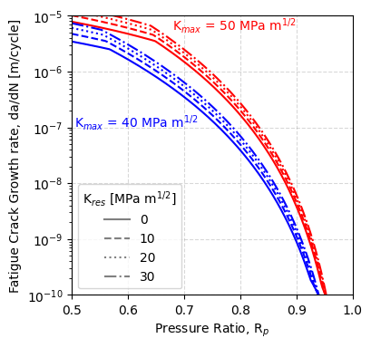